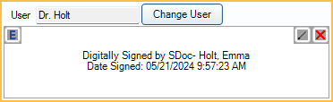

Ortho Chart
The Ortho Chart can be used to keep track of orthodontic visits in a grid format.
In the Chart Module toolbar, click Ortho Chart.

Alternatively, double-click the Ortho Chart area from the Ortho Tab.
The information in this window is completely separate from information in the regular patient chart. The Ortho Chart can also be adapted for other purposes unrelated to orthodontics.
 See our webinar: Ortho Chart
See our webinar: Ortho Chart
Initial Setup
Enable Show Ortho button and tab in Chart module in Preferences to use this feature.
Users must have the Ortho Chart Edit (full) or Ortho Chart Edit (same user, signed) Permission to make changes or additions to the Ortho Chart. Some buttons are disabled when the user does not have either permission.
Before entering information in the Ortho Chart, there are a few setup steps. The information defined during setup affects the tabs, columns, and information shown in the Ortho Chart.
- Create Patient Fields. This information is displayed in the Patient Felds section.
- To show Auto Ortho information, enable the preference, Show Auto Ortho information in the Ortho Chart.
- Define Ortho Chart tabs in Ortho Chart Setup.
- Define the columns to show in the Ortho Chart in Ortho Chart Setup.
Click Setup in the top-left to open Ortho Chart Setup.
Patient Fields
The information that displays in the Patient Fields grid is determined by Patient Fields created by the office. Double-click a field to enter a value.

Ortho Info
The Ortho Info grid displays patient Auto Ortho information. Only shows if the preference, Show Auto Ortho information in the ortho chart is enabled.

User / Signature
The User and Signature information displays if a signature column has been added to a tab.
- User: Displays the user that signed a note, if any. Highlight a row to view user and signature information.
- Change User: Click to change the user who signed the note. Click the signature box to update, select the new provider, enter a signature, then click the signature box again.
- Signature: Enter the provider Electronic Signature. Validity of electronic signatures is determined by Open Dental.
- Entries with a valid signature are highlighted green and Signed shows in the signature column.
- An existing signature may be invalidated by changing data in the signed row. If invalidated, the signature is cleared, the row goes back to white, and the signature column is blank.
- The row may appear red with Invalid in the signature column if changes are made to the database outside of Open Dental.
Ortho Chart
The Ortho Chart is customizable based on Ortho Chart Setup. When opening the Ortho Chart, a new row is automatically created for the current date if one does not already exist. The patient's primary provider is associated with this row.

- Date Range: Display notes for a date range. Click [...] to open the Date Range Filter and select options. This date range also affects the date range selected in the Ortho Chart Audit Trail.
- Tabs: By default, the Ortho Chart tab displays. Additional tabs can be added in Ortho Chart Setup.
- Columns: The columns that display on a tab are customized in Ortho Chart Setup. Click into a cell to enter data.
- Date and Provider are read only and cannot be edited. To create a row with a different date or provider, click Add Row.
- Add Row: Click to add a new row. Ortho Chart entries are sorted by date (oldest to newest). When a tab is opened, only date entries with data in them show. Entering data on one tab populates all tabs with that date and data if columns are the same.

- Date: Enter the date manually. Alternatively, click Today to quickly insert today's date or Now to quickly insert today's date and current time.
- Provider: Optional. Select the provider from the dropdown.
- Save: Click to add the new row, then make edits to the columns as needed.
- Auto Note: Optional. Click into a cell, then click to use Auto Notes to enter information.
- Delete: Highlight a row and click to delete it.
- Audit Trail: View historical changes made on a dated entry. Both patient field and ortho chart changes are tracked.

- To see changes for a specific date, highlight the date under Date Service. By default, dates selected match the date range selected in the Ortho Chart.
- Print: Print the ortho chart grid exactly as it shows when print is clicked. Print in landscape if necessary to fit all columns. In the printout header, the title of the Ortho Chart displays first. The first tab in the list determines the title. The selected tab's title display beneath that. Printing is limited to columns that fit in the first 915 pixels. See Ortho Chart Setup.
Ortho Chart Locking
Ortho Charts can only be edited by one user at a time. By default, the Locked by note displays at the bottom with the current user allowed to make edits.
Take Control: Only displays for users with Ortho Chart Edit permission. If the Ortho Chart is locked by another user, the Take Control button displays and other buttons is hidden. The user cannot make edits until they click this button to take over editing.
When a user takes control from another user, the current controller's work is saved and can be seen by the new controller.